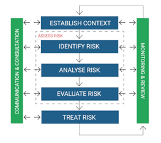

Fayllarga xavfsiz ruxsatni boshqarish. Noqonuniy nusxa ku`chirishdan himoyalash dasturlari Sentinel LDK va boshqalar.
Ishdan maqsad: Kibermakoinda yuzaga keladigan kibermojarolarni hal qilish etikasiga doir bilimlarni o’zlashtirish
Ishni bajarish tartibi:
Kiberjinoyat va kibermojarolar. Intellektual mulkni o'g'irlash va boshqa ko'plab xavfsizlik buzilishlarida bir necha bor ayblangan ko'plab qo'mondonlik va boshqaruv serverlari joylashgan Xitoy kibertahdidlar bilan eng ko'p bog'liq bo'lgan mamlakatlardan biridir. Xitoy AQShga qarshi ko‘plab hujumlar uyushtirgan degan fikr jamoatchilikda keng tarqalgan: AQSh hukumati rasmiylari tomonidan e'lon qilingan ma’lumotlarga ko‘ra Oq uyning maxfiy bo'lmagan tarmog'iga kirish, bahsli orollar bo'yicha mojaro paytida Yaponiyaga qarshi operatsiyalar shular jumlasidandir.
Rossiya kibermakon sohasida boshqa mamlakatlar bilan raqobat qilish choralarini ko'rishga majbur bo'lmoqda va shu tariqa kiberurushlarga bevosita aralashadi. Bu sohada Rossiyaning asosiy raqiblari an'anaviy ravishda AQSh va Britaniya hisoblanadi.
Amerika Qo'shma Shtatlari dunyo mamlakatlari axborot tizimlariga kiberhujumlar bo'yicha eng agressiv davlat hisoblanadi. Aynan Qo'shma Shtatlarda Stuxnet va boshqa yuqori darajadagi kiber qurollar yaratilgan. 1982 yilda Qo'shma Shtatlar Sovet magistral quvurlariga qarshi halokatli kiberhujumni amalga oshirdi.
Aynan kiberjinoyat va kibermojarolarni tartibga solishda kiberxavfsizlik standartlari tashkilotlarni va mamlakatlarni kibertahdidlardan himoya qilish va ularning kiberxavfsizlik holatini yaxshilash uchun mutaxassislar tomonidan yaratilgan eng yaxshi amaliyotlar to'plamidir.
Kiberxavfsizlik tizimlari, odatda, hajmi, sanoati yoki sektoridan qat'i nazar, barcha tashkilotlar uchun amal qiladi.Ushbu mavzuda har qanday kiberxavfsizlik strategiyasi uchun mustahkam poydevor bo'lgan umumiy kiberxavfsizlik muvofiqligi standartlari batafsil bayon etiladi. Kiberxavfsizlik odamlar, jarayonlar, tizimlar, tarmoqlar va texnologiyalarni puxta muvofiqlashtirishni talab qiladi. ISO/IEC 27001:2013 (ISO 27001) bu tashkilotlarga axborot aktivlari xavfsizligini boshqarishga yordam beradigan xalqaro standartdir. U barcha korporativ ma'lumotlarning (masalan, moliyaviy ma'lumotlar, intellektual mulk, xodimlar ma'lumotlari yoki uchinchi shaxslar tomonidan boshqariladigan ma'lumotlar) maxfiyligi, yaxlitligi va mavjudligini ta'minlash uchun AXBT (axborot xavfsizligini boshqarish tizimi) ni joriy qilish uchun boshqaruv tizimini taqdim etadi.
U 2013 yilda ISO (Xalqaro standartlashtirish tashkiloti) va IEC (Xalqaro elektrotexnika komissiyasi) tomonidan nashr etilgan va ISO 27000 standartlari oilasiga tegishli. Bu xalqaro miqyosda tan olingan yagona sertifikatlangan axborot xavfsizligi standartidir. ISO 27001 axborot xavfsizligini boshqarish bo'yicha amaliyot kodeksi bilan qo'llab-quvvatlanadi, ISO/IEC 27002:2013, axborot xavfsizligi xavflarini boshqarish uchun axborot xavfsizligi nazoratini qanday amalga oshirishni tushuntiradi. ISO 27001 sertifikati sizning tashkilotingiz ma'lumotlarini himoya qilish uchun odamlarga, jarayonlarga va texnologiyalarga (masalan, asboblar va tizimlar) sarmoya kiritganligini ko'rsatadi va ma'lumotlaringiz yetarli darajada himoyalanganligini mustaqil ekspert baholash imkonini beradi. Sertifikatlash akkreditatsiyalangan sertifikatlashtirish organi orqali amalga oshiriladi va iste'molchilar, investorlar va boshqa manfaatdor tomonlarga ilg'or xalqaro amaliyotga muvofiq axborot xavfsizligini boshqarayotganligingiz haqida dalillarni taqdim etadi. ISO 27001 standartini qo‘llash tobora muhim ahamiyat kasb etmoqda, chunki me'yoriy talablar (masalan, GDPR, HIPAA va CCPA ) tashkilotlarga iste'molchi va shaxsiy ma'lumotlarini himoya qilish uchun bosim o'tkazadi. Sertifikatlash sertifikatlashtirish organi tomonidan tashqi audit o'tkazilgandan so'ng olinishi mumkin. Auditorlar axborot xavfsizligini boshqarish tizimi standart talablariga javob berishini baholash uchun tashkilot amaliyotlari, siyosatlari va tartiblarini ko'rib chiqadilar.
Sertifikatlash odatda uch yil davom etadi, ammo tashkilotlar doimiy takomillashtirish jarayonining bir qismi sifatida muntazam ichki audit o'tkazishlari kerak. Sertifikatlangandan so'ng, sertifikatlashtirish organi odatda muvofiqlikni nazorat qilish uchun yillik baholash o'tkazadi. Axborot xavfsizligini boshqarish tizimi - axborot xavfsizligi xavfining maqbul darajasini ta'minlash maqsadida tashkiliy ma'lumotlarga tavakkalchiliklarni boshqarish uchun siyosatlar, jarayonlar va tizimlar to'plamidan iborat bo'lgan belgilangan, hujjatlashtirilgan boshqaruv tizimi. Doimiy xavflarni baholash nazorat vositalari to'plami orqali boshqarilishi kerak bo'lgan xavfsizlik tahdidlari va zaifliklarini aniqlashga yordam beradi. ISO 27001 standartiga mos Axborot xavfsizligini boshqarish tizimiga ega boʻlish tashkilotlarga barcha korporativ maʼlumotlarning maxfiyligi, yaxlitligi va mavjudligini optimallashtirilgan va tejamkor tarzda boshqarishga yordam beradi. Xatarlarni boshqarish axborot xavfsizligini boshqarish tizimi asoslarini tashkil qiladi. Muntazam xavflarni baholash ma'lum axborot xavfsizligi xavflarini aniqlashga yordam beradi. ISO 27001 axborot xavfsizligi xavflarini boshqarish va kamaytirish uchun qo'llanilishi mumkin bo'lgan boshqaruv vositalari to'plamini tavsiya qiladi. ISO 27001 axborot xavfsizligi xatarlarini aniqlash, oldini olish va boshqarish uchun asosni ta'minlovchi 114 ta nazoratdan (A ilovasiga kiritilgan va ISO 27002da kengaytirilgan) iborat.
ISO/IEC 27001: 2013 boshqaruvlarining qisqacha mazmuni quidagilardan iborat:
A.5. Axborot xavfsizligi siyosati;
A.6. Axborot xavfsizligini tashkil etish;
A.7. Inson resurslari xavfsizligi;
A.8. Aktivlarni boshqarish;
A.9. Kirish nazorati;
A.10. Kriptografiya;
A.11. Jismoniy va ekologik xavfsizlik;
A.12. Operatsion xavfsizlik;
A.13. Aloqa xavfsizligi;
A.14. Tizimni olish, ishlab chiqish va texnik xizmat ko'rsatish;
A.15. Yetkazib beruvchi munosabatlari;
A.16. Axborot xavfsizligi hodisalarini boshqarish;
A.17. Biznes uzluksizligini boshqarishning axborot xavfsizligi aspektlari;
A.18. Muvofiqlik.
Boshqaruv vositalariga qo'shimcha ravishda, ISO 27001 Axborot xavfsizligini boshqarish tizimini joriy etish, boshqarish va doimiy takomillashtirish bo'yicha ko'rsatmalarni ta'minlaydigan 10 ta boshqaruv tizimining bandlaridan iborat:
1, 2, 3: Qo'llash sohasi, normativ havolalar, atamalar va ta'riflar;
4: Tashkilotning mazmuni;
5: Etakchilik;
6: Rejalashtirish;
7: qo'llab-quvvatlash;
8: Operatsiya;
9: samaradorlikni baholash;
10: takomillashtirish.
Ta'lim, dasturiy ta'minot va muvofiqlik vositalaridan tashqari, IT Governance standartga muvofiqlikni qo'llab-quvvatlash uchun ISO 27001 bo'yicha mutaxassis konsalting xizmatlarini taqdim etadi. Bunga ISO 27001 bo'shliq tahlili va resurslarni aniqlash, qamrovni belgilash, xavflarni baholash, strategiya va boshqalar kiradi. ISO 27001 standartini amalga oshirish turli bosqichlarni o'z ichiga oladi, masalan, loyihaning qamrovini aniqlash, zarur resurslarni ta'minlash uchun yuqori rahbariyat majburiyatini olish, xavflarni baholashni o'tkazish, zarur nazoratni amalga oshirish, tegishli ichki ko'nikmalarni rivojlantirish, harakatlarni qo'llab-quvvatlash uchun siyosat va tartiblarni yaratish, texnik xavflarni kamaytirish bo'yicha chora-tadbirlar, barcha xodimlarni xabardor qilish bo'yicha treninglar o'tkazish, Axborot xavfsizligini boshqarish tizimini doimiy ravishda monitoring qilish va tekshirish va sertifikatlashtirish auditini o'tkazish. ISO 27001 axborot xavfsizligi standarti boʻlib, bu standart bilan 40 000 dan ortiq tashkilot sertifikatlangan. Bu tashkilotlarga ma'lumotlar xavfsizligi choralarini belgilangan va ishonchli mezonga moslashtirishga yordam beradi.
Bu quidagilarda o‘z aksini topadi:
ISO 27001 standartiga mos Axborot xavfsizligini boshqarish tizimi axborotning barcha shakllarini, xoh raqamli, xoh qog'oz yoki bulutda bo'lsin, himoya qilishga yordam beradi.
Axborot xavfsizligini boshqarish tizimining xavf-xatarni baholash va tahlil qilish yondashuvi tufayli tashkilotlar ishlamasligi mumkin bo'lgan mudofaa texnologiyasi qatlamlarini beixtiyor qo'shish uchun sarflangan xarajatlarni kamaytirishi mumkin.
Tashkilot madaniyatiga kiritilgan ISO 27001 bilan xodimlar axborot xavfsizligi xatarlari haqida ko'proq xabardor bo'lib, xavfsizlik choralari tashkilotning barcha jabhalarida keng qamrovli bo'ladi.
Axborot xavfsizligini boshqarish tizimini joriy etish va qoʻllab-quvvatlash tashkilotingizning kiberxavfsizlik va maʼlumotlar buzilishi xavfini sezilarli darajada kamaytiradi.
ISO 27001 standartiga mos keladigan tashkilotlar standartning risklarni boshqarish talablari tufayli rivojlanayotgan axborot xavfsizligi xavflariga javob berish qobiliyatiga ega.
Sertifikatlash tashkilotlarning axborot xavfsizligiga sodiqligidan dalolat beradi va axborot xavfsizligi choralariga rioya qilishga rasman majburiyat olganligini tasdiqlaydi.
ISO 27001 sertifikatining asosiy afzalliklari:
Maʼlumotlarni qayerda bo‘lmasin, himoya qilish;
Axborot xavfsizligi xarajatlarini kamaytirish;
Axborot xavfsizligi madaniyatini shakllantirish;
Kiberhujumlardan himoya qilish;
Rivojlanayotgan xavfsizlik tahdidlariga javob berish;
Shartnoma majburiyatlarini bajarish.
ISO 27002 standarti Axborot xavfsizligini nazorat qilish bo'yicha amaliyot kodeksi
ISO/IEC 27002:2013 ISO/IEC 27001:2013 ga mos keladigan AXBT (axborot xavfsizligini boshqarish tizimi) qismi sifatida xavfsizlikni boshqarish vositalarini joriy qilish uchun maʼlumotnomadir.
ISO 27002 va ISO 27001 o'rtasidagi farq nimada? ISO 27001 AXBT uchun spetsifikatsiyani, jumladan, tashkilot duch keladigan xavflarga mos keladigan xavfsizlik choralarini tanlash uchun foydalanishi kerak bo'lgan xavflarni boshqarish jarayoniga qo'yiladigan talablarni taqdim etadi.
ISO 27002 asosi ISO 27001 ning A ilovasida keltirilgan boshqaruv vositalarini qoʻllash boʻyicha eng yaxshi amaliy qoʻllanmani taqdim etadi. U ISO 27001 standartini qoʻllab-quvvatlaydi va ularni birgalikda qo‘llash kerak.
ISO 27001 axborot xavfsizligi bo'yicha yagona standart bo'lib, unga qarshi tashkilotlar mustaqil ravishda tekshirilgan sertifikatga ega bo'lishi mumkin.Bu axborot xavfsizligi eng yaxshi xalqaro tajribalar asosida boshqarilishini mustaqil ekspert kafolati bilan ta'minlaydi.
Xavfsizlik nazorati maxfiy ma'lumotlarni saqlaydigan va boshqaradigan barcha tashkilotlar uchun axborot xavfsizligini boshqarishning muhim qismidir.
Axborot xavfsizligini ta'minlashga qo'yiladigan maxsus talablar tashkilotdan tashkilotga farq qilishi mumkin bo'lsa-da, tashkilotlar o'z ma'lumotlarini himoya qilish va qonuniy va shartnoma majburiyatlarini bajarish uchun umumiy nazoratni amalga oshirishi mumkin.
ISO 27001 standartining 6.1.2-bandi xavfsizlikni boshqarish vositalarini tanlash va amalga oshirishda tashkilotlar amal qilishi kerak bo'lgan xavflarni boshqarish jarayonini belgilaydi.
Unda tavakkalchilikni baholash jarayoni quyidagilardan iborat bo‘lishi kerak:
Axborot xavfsizligi xavfining ma'lum mezonlarini yaratish va qo'llab-quvvatlash.
Xatarlarni qayta-qayta baholash, barqaror, haqiqiy va taqqoslanadigan natijalarni berishiga ishonch hosil qilish.
Axborot xavfsizligini boshqarish tizimi doirasidagi ma'lumotlarning maxfiyligi, yaxlitligi va mavjudligini yo'qotish bilan bog'liq xavflarni aniqlash.
Ushbu xavflarning egalarini aniqlash.
Muayyan mezonlar bo'yicha axborot xavfsizligi xavflarini tahlil qilish va baholash.
Barcha ishlarni hujjatlar doirasida amalga oshirish.
ISO 27002 boshqaruv ro'yxati. ISO 27001 ning A ilovasida 14 ta nazorat majmuasiga boʻlingan 114 ta xavfsizlik boshqaruvi roʻyxati keltirilgan, ularning har biri ISO 27002 ning 5–18-bandlarida kengaytirilgan:
A.5 Axborot xavfsizligi siyosati. Axborot xavfsizligi tashkilotning yuqori qismidan yo'naltirilishi kerak va siyosat barcha xodimlarga aniq etkazilishi kerak.
A.6. Axborot xavfsizligini tashkil etish. Boshqaruv tizimi tashkilotning axborot xavfsizligini ta'minlash bo'yicha operatsiyalarini, ham saytda, ham tashqarida qo'llab-quvvatlashi kerak.
A.7 Inson resurslari xavfsizligi. Xodimlar va pudratchilar ishga joylashishdan oldin va ish vaqtida tashkilot ma'lumotlarini himoya qilishda o'z rollarini bilishlari kerak. Tashkilot ma'lumotlari ham himoyalangan bo'lishi kerak.
A.8 Aktivlarni boshqarish. Tashkilotlar o'zlarining jismoniy va axborot aktivlarini aniqlashlari va har biri uchun zarur bo'lgan himoya darajasini aniqlashlari kerak.
A.9 Kirish nazorati. Axborot va axborotni qayta ishlash vositalaridan foydalanish ruxsatsiz foydalanuvchi kirishining oldini olish uchun cheklanishi kerak. Foydalanuvchilar parollar kabi autentifikatsiya ma'lumotlarini himoya qilish uchun javobgar bo'lishi kerak.
A.10 Kriptografiya.Axborotning maxfiyligi, yaxlitligi va/yoki mavjudligini himoya qilish uchun kriptografiya va kriptografik kalitlardan foydalanish siyosati ishlab chiqilishi va amalga oshirilishi kerak.
A.11 Jismoniy va ekologik xavfsizlik. Axborotni qayta ishlash vositalariga ruxsatsiz jismoniy kirish, shikastlanish va aralashuvni oldini olish uchun nazoratni joriy qilish kerak.
A.12 Operatsion xavfsizligi. Axborot va axborotni qayta ishlash vositalari zararli dasturlardan, ma'lumotlarni yo'qotishdan va texnik zaifliklardan foydalanishdan himoyalangan bo'lishi kerak.
A.13 Aloqa xavfsizligi. Axborot tarmoqlarda va tashkilot ichida ham, tashqarida ham uzatilishi bilan himoyalangan bo'lishi kerak.
A.14 Tizimni olish, ishlab chiqish va texnik xizmat ko'rsatish. Axborot xavfsizligi axborot tizimlarining butun hayoti davomida ishlab chiqilishi va amalga oshirilishi kerak. Sinov ma'lumotlari ham himoyalangan bo'lishi kerak.
A.15 Yetkazib beruvchi munosabatlari. Ta'minlovchilar kirishi mumkin bo'lgan tashkilotning har qanday axborot aktivlari tegishli tarzda himoyalangan bo'lishi kerak.
A.16 Axborot xavfsizligi hodisalarini boshqarish. Axborot xavfsizligi hodisalari izchil va samarali tarzda hal qilinishi kerak.
A.17 Biznes uzluksizligini boshqarishning axborot xavfsizligi aspektlari. Axborot xavfsizligi uzluksizligi tashkilotning biznes uzluksizligini boshqarish amaliyotiga kiritilishi kerak.
A.18 Muvofiqlik. Axborot huquqiy, qonunchilik, tartibga solish va shartnoma majburiyatlarini bajarishi hamda tashkilot siyosati va tartiblariga muvofiqligi uchun himoyalangan bo‘lishi kerak.
ISO 27005 standarti
ISO 27005 - bu ISO 27001 talablariga muvofiq axborot xavfsizligi xavfini baholashni tavsiflovchi xalqaro standart. Xatarlarni baholash tashkilotning ISO 27001 muvofiqlik loyihasining eng muhim qismlaridan biridir. ISO 27001 axborot xavfsizligi risklarini boshqarish, amalga oshirilgan xavf-xatarlar va A ilovasida keltirilgan tegishli nazorat usullari qanday qo'llanilganligi to'g'risida dalillarni ko'rsatishni talab qiladi.
ISO 27005 hajmi va sektoridan qat'i nazar, barcha tashkilotlar uchun amal qiladi. U ISO 27001 standartida ko'rsatilgan umumiy tushunchalarni qo'llab-quvvatlaydi va xavflarni boshqarish yondashuvi asosida axborot xavfsizligini qoniqarli joriy etishga yordam berish uchun mo'ljallangan.
Axborot xavfsizligi risklarini boshqarish nima? Axborot xavfsizligi risklarini boshqarish axborot xavfsizligini boshqarishning ajralmas qismidir. U nima sodir bo'lishi va oqibatlari qanday bo'lishi mumkinligini tahlil qilish jarayonini belgilaydi va tashkilotlarga nima qilish kerakligini va qachon xavfni maqbul darajaga kamaytirishni aniqlashga yordam beradi.
Axborot xavfsizligi risklarini boshqarish doimiy jarayon bo'lib, quyidagilarga yordam beradi:
Xavfni aniqlash va baholash;
Biznes uchun xavf ehtimoli va oqibatlarini tushunish;
Xavfni davolash uchun ustuvor tartibni belgilash;
Xatarlarni boshqarish qarorlarini qabul qilishda manfaatdor tomonlarning ishtiroki;
Xatarlarni davolash monitoringi samaradorligi;
Xodimlarning xavf-xatarlardan xabardorligi va ularni kamaytirish bo'yicha ko'rilayotgan choralar.
Tashkilotlar o'zlarining axborot xavfsizligiga bo'lgan ehtiyojlarini to'g'ri aniqlash uchun axborot xavfsizligi xavfiga tizimli yondashuvni qo'llashlari kerak.
ISO 27005 risklarni boshqarish jarayoni. Garchi ISO 27005 risklarni boshqarishning maxsus metodologiyasini belgilamasa ham, u oltita asosiy komponentga asoslangan uzluksiz axborot risklarini boshqarish jarayonini nazarda tutadi:
Kontekstni yaratish
Xavfni baholash
Xavfni davolash
Xavfni qabul qilish
Xavf haqida xabar berish va maslahat berish
Xavf monitoringi va tahlili
1. Kontekstni yaratish: Risklarni boshqarish konteksti risklar qanday identifikatsiya qilinganligi, tavakkalchilikka egalik qilish uchun kim javobgar bo'lishi, xavflar ma'lumotlarning maxfiyligi, yaxlitligi va mavjudligiga qanday ta'sir qilishi, xavf ta'siri va ehtimoli qanday hisoblanganligi mezonlarini belgilaydi.
2. Risklarni baholash: Ko'pgina tashkilotlar besh asosiy bosqichni o'z ichiga olgan aktivlarga asoslangan risklarni baholash jarayonini tanlaydilar:
I. Axborot aktivlarini tuzish
II. Har bir aktivga tegishli tahdidlar va zaifliklarni aniqlash
III. Xavf mezonlari asosida ta'sir va ehtimollik qiymatlarini belgilash
IV. Har bir xavfni qabul qilinadiganlikning oldindan belgilangan darajalari bo‘yicha baholash
V. Qaysi risklarni qanday tartibda va qaysi tartibda hal qilish zarurligini aniqlash.
3. Riskni davolash: Xavfni davolashning to'rtta usuli mavjud:
I. Xavfni butunlay yo'q qilish orqali "qoching"
II. Xavfsizlik nazoratini qo'llash orqali xavfni "o'zgartirish"
III. Riskni uchinchi shaxs bilan "bo'lishish" (sug'urta yoki autsorsing orqali)
IV. Riskni "ushlab turish" (agar xavf belgilangan xavfni qabul qilish mezonlariga to'g'ri kelsa)
4. Riskni qabul qilish: Tashkilotlar mavjud siyosatlar, maqsadlar, vazifalar va aktsiyadorlar manfaatlarini hisobga olgan holda riskni qabul qilish uchun o'zlarining mezonlarini belgilashlari kerak.
5. Xavf bo'yicha aloqa va maslahat: samarali aloqa axborot xavfsizligi risklarini boshqarish jarayoni uchun muhim ahamiyatga ega. Bu risklarni boshqarishni amalga oshirish uchun mas'ul bo'lganlar qarorlar qabul qilinadigan asosni va nima uchun muayyan harakatlar talab qilinishini tushunishlarini ta'minlaydi. Xavf haqida ma'lumot almashish va almashish, shuningdek, qaror qabul qiluvchilar va boshqa manfaatdor tomonlar o'rtasida xavfni qanday boshqarish bo'yicha kelishuvni osonlashtiradi.
Risk bilan aloqa qilish faoliyati doimiy ravishda amalga oshirilishi kerak va tashkilotlar normal operatsiyalar, shuningdek favqulodda vaziyatlar uchun xavf bilan bog'lanish rejalarini ishlab chiqishi kerak.
6. Risk monitoringi va tahlili: Risklar statik emas va keskin o'zgarishi mumkin. Shu sababli, o'zgarishlarni tezda aniqlash va xavf rasmini to'liq ko'rib chiqish uchun ularni doimiy ravishda kuzatib borish kerak.

Tashkilotlar quyidagilarga diqqat bilan qarashlari kerak:
Risklarni boshqarish doirasiga kiritilgan har qanday yangi aktivlar;
O'zgaruvchan biznes talablariga javoban o'zgartirishni talab qiluvchi aktiv qiymatlari;
Tashqi yoki ichki tahdidlar hali baholanmagan;
Axborot xavfsizligi hodisalari.
Nima uchun tashkilotlar ISO 27005 ni qabul qilishlari kerak? Yagona yondashuvni qo'llaydigan boshqa mashhur risklarni boshqarish standartlaridan farqli o'laroq, ISO 27005 moslashuvchan xususiyatga ega va tashkilotlarga o'zlarining biznes maqsadlaridan kelib chiqqan holda risklarni baholashga o'zlarining yondashuvlarini tanlash imkonini beradi.
ISO 27005 oddiy, takrorlanadigan tuzilishga amal qiladi, har bir asosiy band quyidagi to'rt bo'limga ajratilgan:
Kirish: harakatni bajarish uchun zarur bo'lgan ma'lumotlar;
Harakat: faoliyatning o'zi;
Amalga oshirish bo'yicha ko'rsatma: har qanday qo'shimcha tafsilot;
Natija: faoliyat natijasida hosil bo'lishi kerak bo'lgan ma'lumotlar.
Ushbu izchil yondashuv tashkilotlarda risklarni boshqarish bo'yicha har qanday faoliyatni boshlashdan oldin zarur bo'lgan barcha ma'lumotlarga ega bo'lishini ta'minlashga yordam beradi.
ISO 27005 ISO 27001 standartining muvofiqligini ham qo'llab-quvvatlaydi, chunki oxirgi standart AXBT (axborot xavfsizligini boshqarish tizimi) kontekstida amalga oshirilgan har qanday boshqaruvlar riskga asoslangan bo'lishi kerakligini belgilaydi. ISO 27005 standartiga muvofiq axborot xavfsizligi risklarini boshqarish jarayonini amalga oshirish ushbu talabni qondirishi mumkin.
Topshiriq:
Amaliy ishning ketma-ketligi bilan tanishing;
Amaliy ish bo'yicha tahlil o‘tkazing va hisobot tayyorlang.
Test savollariga tayyorlaning.
Jahonda amalga oshirilayotgan kiberjinoyat va kibermojarolarni tahlil qiling.
Nazorat savollari:
Kibermojaro nima?
ISO/IEC 27002:2013 standartining maqsadi nimadan iborat?
ISO 27002 standartining vazifasi nimadan iborat?
ISO 27005 standartida nima bayon etilgan?